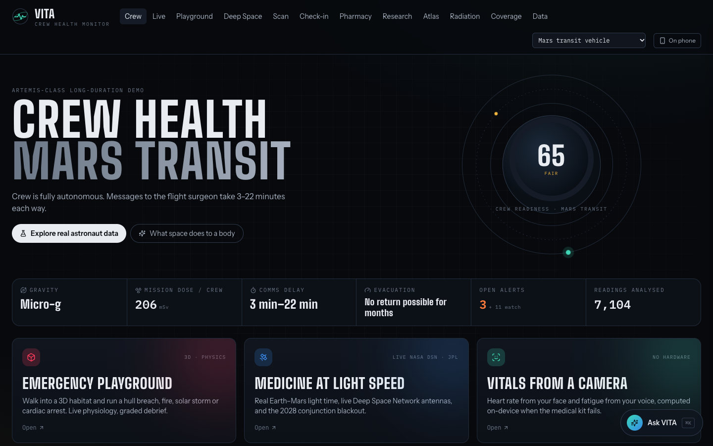
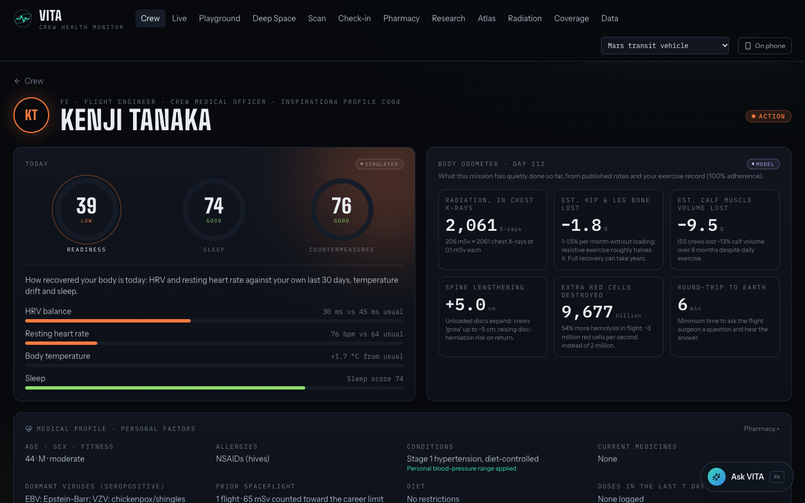
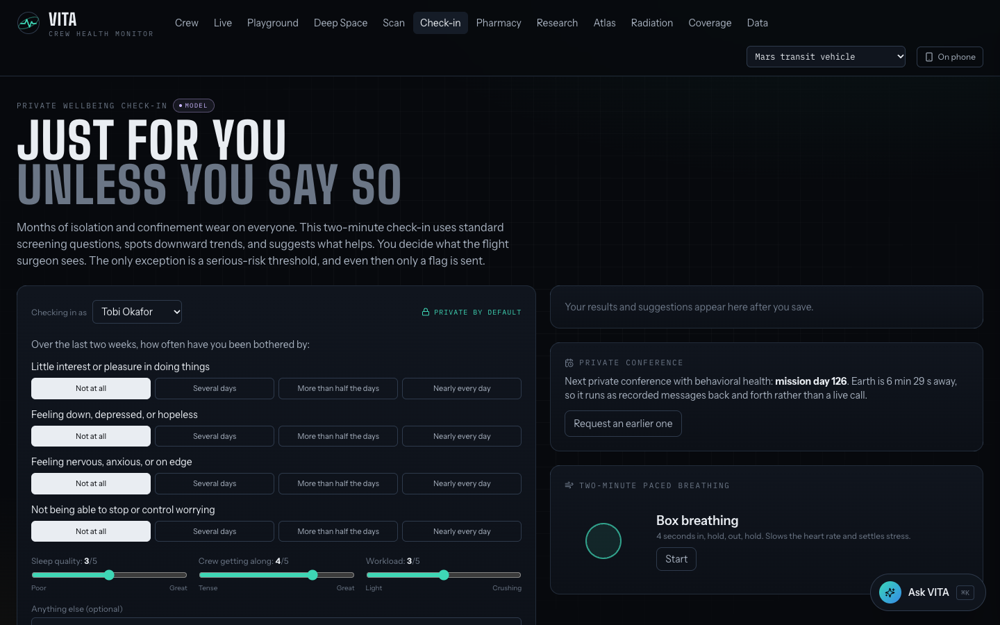
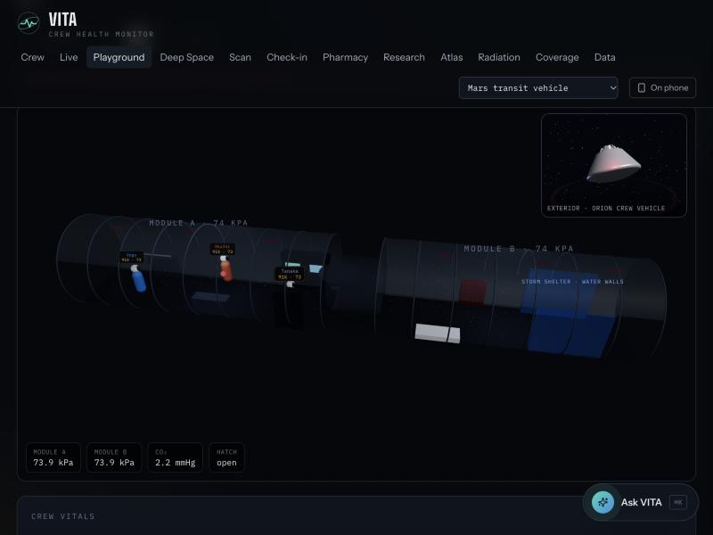
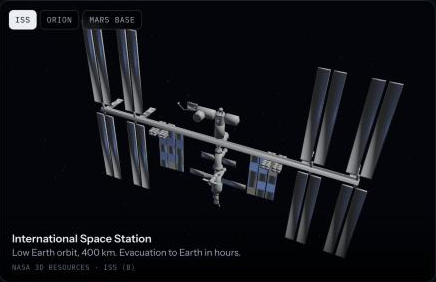
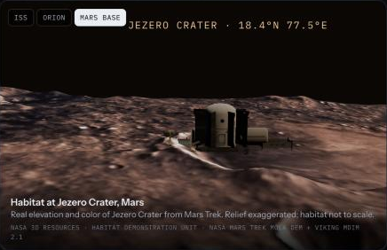
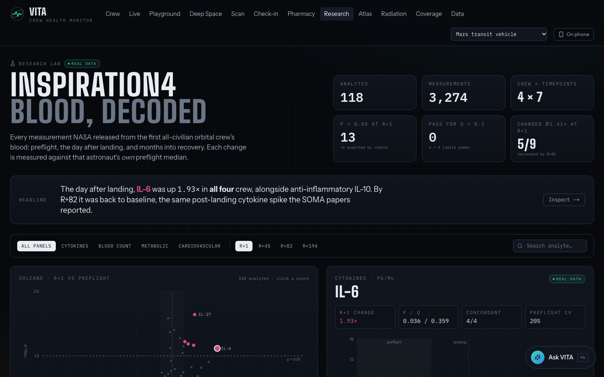
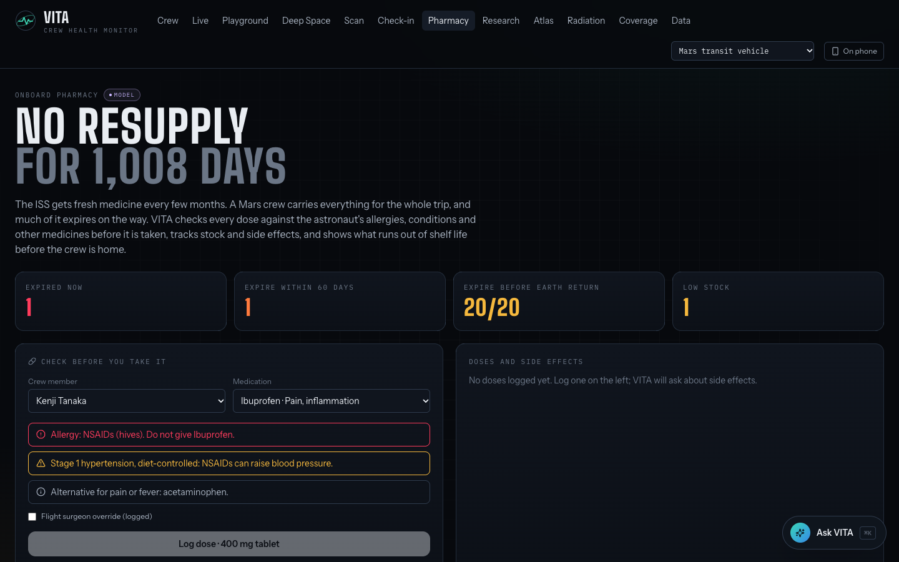
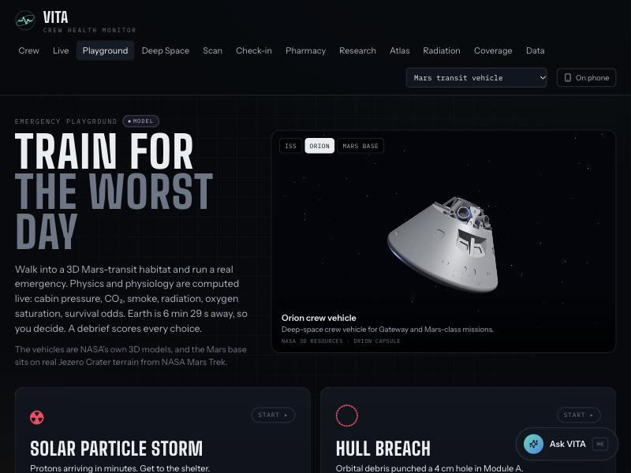

On Mars, the doctor is 20 minutes away.
VITA is the doctor already on board.
Challenge: Create Health Monitoring Software for Astronauts on Space Missions
Team [TEAM NAME] · [Member 1] · [Member 2] · [Member 3] · [Member 4]

On the ISS, a sick astronaut can talk to a flight surgeon live and be home in hours. On a Mars mission none of that holds. NASA calls the answer Earth-independent medical operations: the crew has to detect, decide and treat on its own.
Delay and blackout computed from real NASA/JPL Horizons planet positions for a Nov 2026 → Aug 2029 Mars mission.

Flight-surgeon view. Personal baselines from real crew bloodwork, three-signal alerts, allergies and conditions that change the warning ranges, escalation that knows the comms delay.

Astronaut view. Two-minute private check-in, camera heart-rate scan, live heart monitor, and an AI flight surgeon that answers when Earth can't.



Hull breach, CO₂ build-up, fire, solar storm, cardiac arrest. Physics and physiology are computed live, Earth is minutes away, and a debrief grades every decision.

IL-6 rose 1.93× in all 4 Inspiration4 crew the day after landing, and was back to baseline by R+82.

The same problem exists here: places where the specialist is far away and help is slow.
Space: Artemis lunar crews, Gateway, the first Mars mission
Earth: Antarctic stations, submarines, ships, rural clinics
Next: real wearables, nutrition and injury logs, return-to-gravity checklist

VITA · the doctor already on board